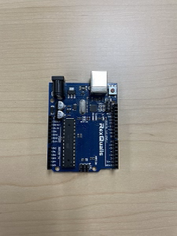
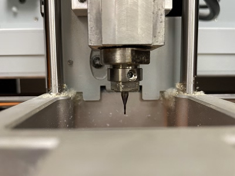
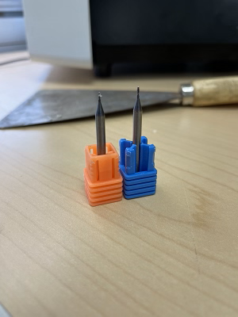
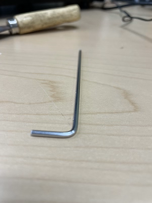
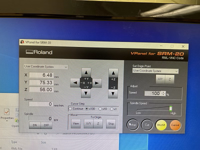
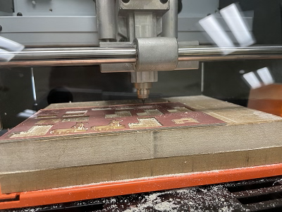
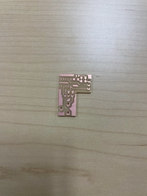
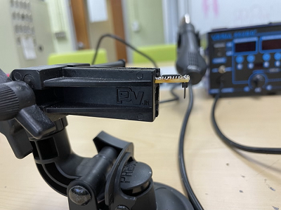
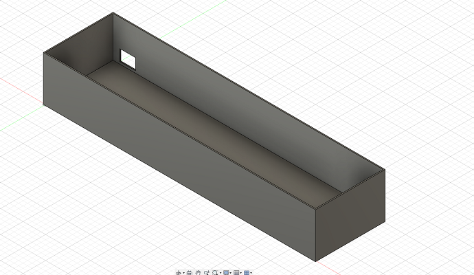

Hello and welcome to the Integrate project of Digital Fabrication.
This week we'll be using several machines to construct components for an edge-lit acrylic sign.

Since we are using multiple machines this week, the instructions are not as chronological as previous weeks.
I started with electronics training, where I learned how to make a working circuit similar to the one above.

To start the circuit, I learned how to use the circuit-cutting machine to cut PCB plates.

The machine uses two endmills: one for cutting the copper plating and one for the PCB itself.

To switch endmills, use this tool on the drill to loosen or tighten the drill.
Once the proper endmill is secured, open the accompanying software and move the endmill to where you want to cut.

Move the endmill as close to the board as possible (without touching it) and set the X/Y and Z origins.
These buttons let the machine know where to designate the cuts.
Load the desired file and close the machine. I used a board design by Tuna, one of the TAs for Digital Fabrication (shoutout!).
Then click cut and watch to make sure the endmill is cutting through the copper layer properly.
The machine should shave off the unnecessary sections of copper, leaving only conductive segments for our chip to use.
Once the top layer finishes, make sure to open the machine and use this ghostbuster-looking vacuum to remove any leftover copper dust.

Switch to the PCB-designated endmill and loosen the drill so that the endmill lands softly on the cutting area.
Re-tighten the endmill and use the software to lift it slightly above the board.
Select cut again, and repeat the same steps as before until the machine is properly clean.

Mine came out like this, although the class later changed the designs used in the final project.
Remove the chip from the rest of the board and move it towards a soldering station.
In training, we used a Yihua Soldering Station to attach our electronic components to the circuit board.

Soldering uses intense heat to connect components, so be very careful during this step.
I used this grip device to hold my circuit board in place to solder from a safe distance.
I placed the soldering glue on the connection points of the board and attached the components on top.
Then I used the heating device to melt the glue. After a few seconds, the components bonded to the circuit board.
My final circuit came out like such.
As mentioned before, we will be using pre-made circuit boards in the final product.
After creating the circuit board, I went to Adobe Illustrator to construct a laser-cut acrylic design for the final lamp.
I downloaded this template for the base of the acrylic component.
For some time, I experimented with the tools in illustrator to get a basic design going.
After a while, I came up with the above design.
I wasn't satisfied with the simplistic design, so I downloaded an R2D2 vector and added it to the base.
I also used the curved text feature to add a silly quote near the base of the lamp.
I finally produced this near-final draft. However, at some point, I accidentally rastered the image.
Rastering the image means that the Glowforge will not detect and cut the outer line.
I am currently still fixing this issue, so my acrylic component is not yet finished.
Before we move on from the Glowforge, I should mention that one component was pre-designed for this project.
This segment will house the acrylic and electric components of the final product.
Another step towards making the final product is to design a 3D-printed exterior container to hold the electronic components.
As in previous weeks, we will be using Fusion 360 to design the exterior container.
I started with a rectangular sketch about the same size as the components pre-cut in the Fiber Lab for us.
I also added a 0.025in offset to allow extra space for the components to fit in.
Then I extruded the in-between space to be tall enough to fit all of the components inside.

Finally, I added a rectangular sketch to one side of the exterior box.
I extruded this as a cut from the main body, creating a hole for the electronic components to fit in.
Here is a render of the final product.
When I printed this piece, I hadn't yet added the rectangular hole for the electronic components.
I still have to print the updated exterior and laser-cut the redesign of my acrylic piece, so my final product is not complete.
However, I learned to print the exterior with the electronic port and not raster my acrylic cut.